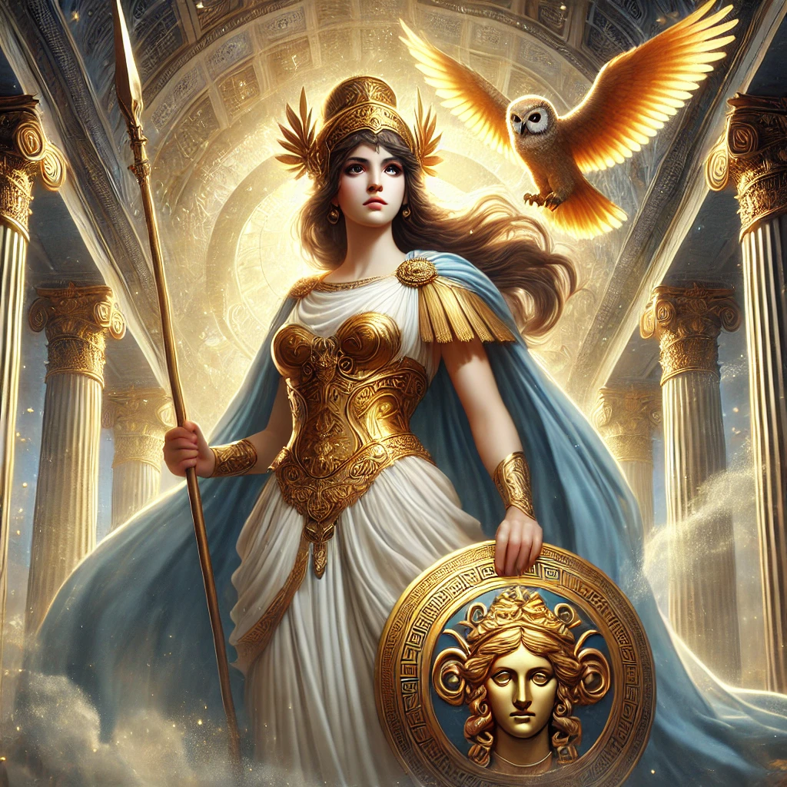
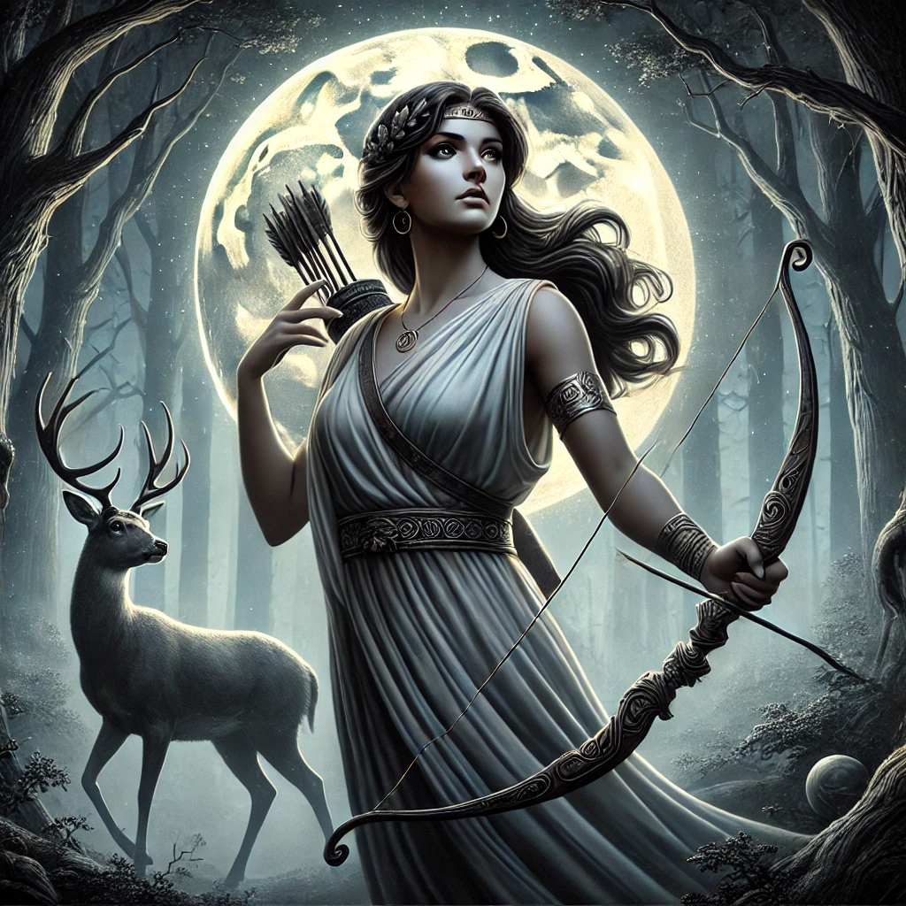

<!DOCTYPE html>
<html lang="en">
<head>
    <meta charset="UTF-8">
    <meta name="viewport" content="width=device-width, initial-scale=1.0">
    <title>Zeus - Greek Mythology with Mr. Sovocool</title>
    <style>
        body {
            font-family: Arial, sans-serif;
            margin: 0;
            padding: 0;
            background-image: url('background.webp');
            background-size: cover;
            background-attachment: fixed;
            background-position: center;
            background-repeat: no-repeat;
            color: white;
        }
        .header-banner {
            background-color: rgba(0, 0, 139, 0.8);
            width: 100%;
            text-align: center;
            padding: 20px 0;
            position: relative;
        }
        .header-banner img {
            max-width: 60%;
            height: auto;
        }
        .container {
            padding: 20px;
            background-color: rgba(0, 0, 0, 0.75);
            margin: 20px;
            border-radius: 10px;
            text-align: center;
        }
        .container h1 {
            color: yellow;
            font-size: 40px;
        }
        .container h3 {
            font-size: 22px;
            font-style: italic;
            font-weight: normal;
            color: white;
        }
        .container p {
            text-align: left;
            font-size: 20px;
            margin: 10px 0;
        }
        .container p strong {
            color: yellow;
        }
        .container p em {
            font-style: italic;
            color: white;
        }
        .god-image {
            width: 50%;
            max-width: 400px;
            border-radius: 10px;
        }
        .grid {
            display: grid;
            grid-template-columns: repeat(5, 1fr);
            gap: 20px;
            max-width: 900px;
            margin: 0 auto;
        }
        .grid a {
            text-decoration: none;
            color: white;
            font-size: 18px;
            font-weight: bold;
            display: flex;
            flex-direction: column;
            align-items: center;
            justify-content: center;
            position: relative;
            border-radius: 10px;
            overflow: hidden;
        }
        .grid img {
            width: 100%;
            height: auto;
            border-radius: 10px;
        }
        .grid span {
            position: absolute;
            bottom: 10px;
            background-color: rgba(0, 0, 0, 0.6);
            color: white;
            padding: 5px 10px;
            border-radius: 5px;
        }
    </style>
</head>
<body>
    <div class="header-banner">
        
    </div>
    <div class="container">
        <h1>Zeus</h1>
        <h3>God of the Sky, Thunder, Lightning, and Justice</h3>
        
        
<p><strong>Roman Name:</strong> <em>Jupiter</em></p>        
<p><strong>Parents:</strong> <em>Cronus and Rhea</em></p>
        <p><strong>Spouse(s):</strong> <em>Hera, Metis, Themis, Eurynome, Demeter, Mnemosyne, Leto, Maia, Dione</em></p>
        <p><strong>Siblings:</strong> <em>Poseidon, Hades, Hera, Demeter, Hestia</em></p>
        <p><strong>Children:</strong> <em>Ares, Athena, Apollo, Artemis, Hermes, Dionysus, Persephone, Heracles (and many more)</em></p>
        <br>
        <p>Zeus is the king of the Greek gods and ruler of Mount Olympus. He is the god of the sky, thunder, and justice. People often picture him holding a thunderbolt, which he uses to show his power. Zeus is also known for his strong sense of justice, as he was responsible for maintaining order among both gods and humans.</p>
        <p>As the leader of the Olympians, Zeus made sure that laws were followed and that people were treated fairly. He was also the god of hospitality, meaning he expected people to treat guests with kindness and respect. Because of his role in enforcing order, he often acted as a mediator when conflicts broke out among gods or mortals.</p>
        <p>Zeus’s main symbols include the thunderbolt, the eagle, and the oak tree. The thunderbolt represents his power, the eagle shows his role as ruler of the sky, and the oak tree is a sign of strength and wisdom.</p>
        <p>While Zeus was a powerful and respected god, he was also known for his many love affairs, which led to many children—both divine and mortal. This made him an important figure in many myths, as his children often played major roles in Greek stories.</p>
        <p>People across ancient Greece built temples to honor Zeus, with the most famous being the Temple of Zeus in Olympia. He was worshipped as the protector of kings and the guardian of oaths, making him one of the most important gods in Greek mythology.</p>
        <br>
      <p><strong style="color: yellow;">Notable Stories About Zeus:</strong></p>
        <ul style="text-align: left; font-size: 20px; list-style-type: none; padding-left: 40px;">
            <li><a href="#zeus-vs-cronus" style="color: white; text-decoration: underline; font-weight: normal;">Zeus vs. Cronus – The Rise of Olympus</a></li>
            <li><a href="#creation-of-pandora" style="color: white; text-decoration: underline; font-weight: normal;">The Creation of Pandora</a></li>
            <li><a href="#zeus-and-prometheus" style="color: white; text-decoration: underline; font-weight: normal;">Zeus and Prometheus – The Gift of Fire</a></li>
            <li><a href="#great-flood" style="color: white; text-decoration: underline; font-weight: normal;">The Great Flood – Deucalion and Pyrrha</a></li>
            <li><a href="#birth-of-athena" style="color: white; text-decoration: underline; font-weight: normal;">The Birth of Athena</a></li>    
        </ul>
      <br>  
      <h2 id="zeus-vs-cronus" style="color: yellow; font-weight: bold; text-align: center;">Zeus vs. Cronus – The Rise of Olympus</h2>
        <p>A long time ago, before the rule of Zeus, the world was controlled by the Titans, powerful beings led by Cronus. Cronus was the king of the Titans and ruled over the universe. However, he feared losing his power because of a prophecy that said one of his children would overthrow him. To prevent this, he swallowed each of his children as soon as they were born.</p>
        <p>His wife, Rhea, was heartbroken. When she gave birth to her youngest son, Zeus, she could not let Cronus take him. Instead, she tricked him by giving him a stone wrapped in a blanket, which he swallowed, thinking it was the baby. Meanwhile, Rhea secretly hid Zeus on the island of Crete, where he was raised in safety.</p>
        <p>When Zeus grew up, he became strong and wise. With the help of the goddess Metis, he came up with a plan to defeat Cronus. He disguised himself as a servant and tricked Cronus into drinking a special potion. The potion made Cronus vomit, releasing Zeus’s swallowed siblings—Hestia, Demeter, Hera, Hades, and Poseidon—who had been trapped inside him for years.</p>
        <p>Now free, Zeus and his siblings waged a great war against Cronus and the Titans. This battle, called the Titanomachy, lasted for ten years. Zeus and his allies, including the Cyclopes and the hundred-handed giants called the Hecatoncheires, finally defeated the Titans. As a reward, the Cyclopes gave Zeus his mighty thunderbolt, Poseidon his trident, and Hades his invisibility helmet.</p>
        <p>After the victory, Zeus banished most of the Titans to Tartarus, a deep prison in the Underworld. He then divided the world with his brothers: Zeus ruled the sky, Poseidon ruled the sea, and Hades ruled the Underworld. This was the beginning of the rule of the Olympian gods, with Zeus as their king.</p>
      <br>  
      <h2 id="creation-of-pandora" style="color: yellow; font-weight: bold; text-align: center;">The Creation of Pandora</h2>
        <p>After Zeus defeated the Titans and became the ruler of the gods, he wanted to maintain control over both gods and mortals. However, there was one Titan who continued to defy him—Prometheus. Prometheus was wise and cared deeply for humans. Against Zeus’s wishes, he stole fire from the gods and gave it to mankind, allowing them to cook, stay warm, and create tools.</p>
        <p>Zeus was furious. To punish both Prometheus and humans, he came up with a clever plan. He ordered Hephaestus, the god of craftsmanship, to create the first woman out of clay. The gods gave her many gifts: beauty from Aphrodite, wisdom from Athena, and charm from Hermes. She was named Pandora, which means “all-gifted.”</p>
        <p>Zeus then gave Pandora a beautifully decorated jar (often called Pandora’s Box) and told her never to open it. He sent her to Earth to marry Epimetheus, Prometheus’s brother. Though Prometheus had warned Epimetheus not to accept any gifts from Zeus, he was enchanted by Pandora and took her as his wife.</p>
        <p>For a while, life was peaceful, but Pandora’s curiosity grew. She wanted to know what was inside the jar. One day, unable to resist, she lifted the lid—and out poured all the evils of the world, including sickness, pain, sorrow, and death. Horrified, she quickly closed the jar, but it was too late. These evils had already spread across the earth, changing the world forever.</p>
        <p>However, at the very bottom of the jar, one thing remained—Hope. Despite the suffering that had been released, Hope stayed behind to comfort humanity.</p>
        <p>This story explains why the world has both pain and hope, reminding people that even in difficult times, there is always something to hold onto.</p>
        <br>
          <h2 id="zeus-and-prometheus" style="color: yellow; font-weight: bold; text-align: center;">Zeus and Prometheus – The Gift of Fire</h2>
        <p>Prometheus was a wise and kind Titan who cared deeply for humans. Unlike the other Titans, he did not fight against Zeus during the great war between the Olympians and the Titans. Because of this, Zeus allowed Prometheus and his brother, Epimetheus, to live freely.</p>
        <p>Zeus put Prometheus and Epimetheus in charge of creating life on Earth. Epimetheus gave special abilities to animals—speed, strength, claws, and wings—but by the time he got to humans, he had nothing left to give. Feeling sorry for them, Prometheus wanted to help. He saw that humans were weak and struggling to survive, so he decided to give them the greatest gift of all: fire.</p>
        <p>But there was a problem—Zeus had forbidden humans from having fire. He feared that if they had it, they would become too powerful and no longer need the gods.</p>
        <p>Prometheus didn’t listen. One night, he stole fire from Mount Olympus, hiding a burning torch in a hollow reed. He carried it down to Earth and gave it to humans, teaching them how to use it for warmth, cooking, and making tools. With fire, humans flourished, creating civilizations and growing stronger.</p>
        <p>When Zeus discovered what Prometheus had done, he was furious. As punishment, he chained Prometheus to a mountain where an eagle came every day to peck at his liver. Since Prometheus was immortal, his liver grew back each night, and the torture continued for years.</p>
        <p>But Prometheus never regretted helping humanity. Eventually, the hero Heracles (Hercules) freed him, shooting the eagle with an arrow and breaking his chains. Though Zeus was still angry, he allowed Prometheus to go free.</p>
        <p>This story teaches that wisdom, courage, and sacrifice can help others, even when facing great punishment.</p>
      <br>  
      <h2 id="great-flood" style="color: yellow; font-weight: bold; text-align: center;">The Great Flood – Deucalion and Pyrrha</h2>
        <p>Long ago, Zeus looked down from Mount Olympus and saw that humans had become wicked and cruel. They no longer respected the gods or lived with honor. Angered by their behavior, Zeus decided to wipe out humanity and start over. To do this, he sent a great flood to cover the earth.</p>
        <p>Before the flood came, a kind and wise man named Deucalion and his wife, Pyrrha, caught the attention of the gods. Deucalion was the son of Prometheus, the Titan who had given fire to humans. Prometheus, knowing of Zeus’s plan, warned Deucalion to build a large boat. Deucalion and Pyrrha quickly gathered supplies and built a sturdy wooden ark.</p>
        <p>When the rains began, the whole world was flooded. Towns and fields disappeared underwater, and nearly all living things were swept away. For nine days and nine nights, Deucalion and Pyrrha floated in their boat, the only survivors.</p>
        <p>Finally, the rain stopped, and their ark came to rest on Mount Parnassus. As the waters receded, Deucalion and Pyrrha stepped onto dry land. They were grateful to be alive, but they were also sad—they were the last two humans on Earth.</p>
        <p>Desperate to restore humanity, they prayed to the goddess Themis, who told them to “throw the bones of their mother over their shoulders.” At first, they were confused, but then they realized the “mother” Themis spoke of was Mother Earth, and her “bones” were stones.</p>
        <p>Following the goddess’s advice, they picked up stones and tossed them behind them. The stones Deucalion threw turned into men, and the stones Pyrrha threw became women. In this way, humanity was reborn, and the world was filled with people once again.</p>
        <p>This story teaches that hope, faith, and wisdom can lead to new beginnings, even after great destruction.</p>
      <br>  
      <h2 id="birth-of-athena" style="color: yellow; font-weight: bold; text-align: center;">The Birth of Athena</h2>
        <p>Athena, the goddess of wisdom and war, had one of the strangest births in Greek mythology. Her father was Zeus, the king of the gods, and her mother was Metis, a wise Titaness.</p>
        <p>One day, Zeus learned of a prophecy that said Metis would give birth to a child more powerful than him. Afraid that his own child might overthrow him, Zeus decided to stop the prophecy from coming true. When Metis was pregnant, Zeus swallowed her whole, believing this would prevent the child from ever being born.</p>
        <p>For a while, everything seemed fine, but then Zeus started having terrible headaches. The pain was unbearable, and he could not find relief. He called for Hephaestus, the blacksmith god, to help him. Following Zeus’s orders, Hephaestus took a mighty axe and struck Zeus’s forehead with all his strength.</p>
        <p>Suddenly, Athena burst out of Zeus’s head, fully grown and wearing shining armor. She held a spear in one hand and a shield in the other, letting out a powerful battle cry as she appeared. The other gods were amazed by her sudden and unusual birth.</p>
        <p>Even though she came from Zeus alone, Athena was known for her wisdom, strategy, and fairness. She became one of his most trusted children and a powerful protector of heroes. She was also the patron goddess of Athens, the city named in her honor.</p>
        <p>Athena is often seen with her shield, spear, and an owl, which symbolizes wisdom. Unlike Ares, the god of war, she valued strategy over violence, making her a respected and admired goddess among both gods and mortals.</p>
        <p>This story shows that wisdom and strength can come from unexpected places, and it explains why Athena was seen as a unique and powerful goddess from the moment she was born.</p>
        <br>
    </div>
<br>
        <p style="text-align: center; font-weight: bold;">Click on an image below to learn more about the Olympians:</p>
        <div class="grid">
            <a href="index.html"><span>Home</span></a>
            <a href="hera.html"><span>Hera</span></a>
            <a href="poseidon.html"><span>Poseidon</span></a>
            <a href="demeter.html"><span>Demeter</span></a>
            <a href="athena.html"><span>Athena</span></a>
            <a href="apollo.html"><span>Apollo</span></a>
            <a href="artemis.html"><span>Artemis</span></a>
            <a href="ares.html"><span>Ares</span></a>
            <a href="aphrodite.html"><span>Aphrodite</span></a>
            <a href="hephaestus.html"><span>Hephaestus</span></a>
            <a href="hermes.html"><span>Hermes</span></a>
            <a href="dionysus.html"><span>Dionysus</span></a>
            <a href="hades.html"><span>Hades</span></a>
            <a href="hestia.html"><span>Hestia</span></a>
        </div>
<br><br>
    <p class="copyright" style="text-align: center;">&copy; 2025 Stephen Sovocool</p>
    </div>
</body>
</html>
